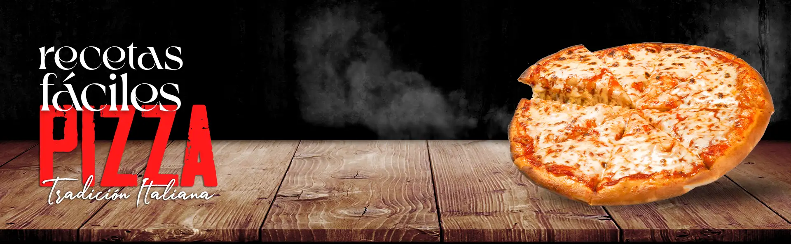
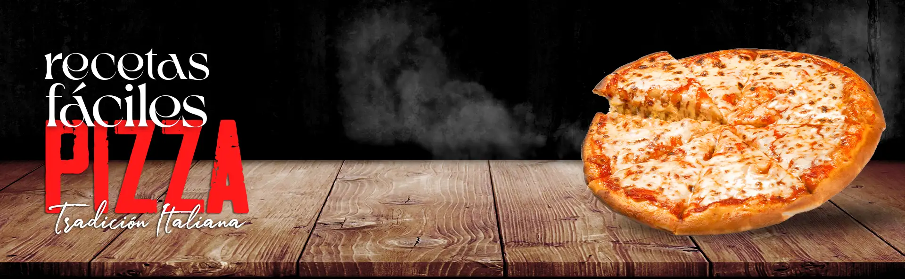

Pizza clásica italiana
La pizza es un pan plano horneado elaborado con harina de trigo, sal, agua y levadura y cubierto con salsa de tomate. Original de la cocina napolitana (Italia), se ha hecho muy popular en todo el mundo y presenta muy distintas variantes.
Ingredientes necesarios
- 300 gramos de harina.
- 30 gramos de levadura fresca.
- Agua - Cantidad necesaria.
- 2 cucharadas de aceite.
- 1 lata de salsa de tomate.
Preparación
- Disponer la harina en un bowl.
- Agregar el aceite, la levadura y el agua. Unir todos los ingredientes hasta formar la masa y amasar por 10 minutos más. Reservar por 15 minutos.
- Dividir el bollo de masa por la mitad y estirar las 2 pizzas sobre una fuente para horno. Dejar fermentar por 10 minutos y cubrir con salsa de tomate.
- Cocinar en horno precalentado medio (180ºC) hasta que resulten cocidas.
- Terminar de armar las pizzas a su gusto (mozzarella, albahaca, etc), gratinar y... A disfrutar!